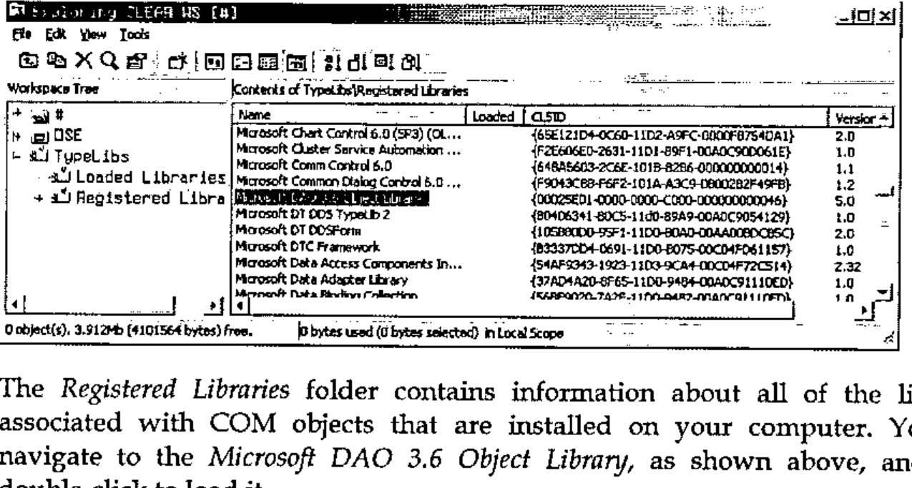
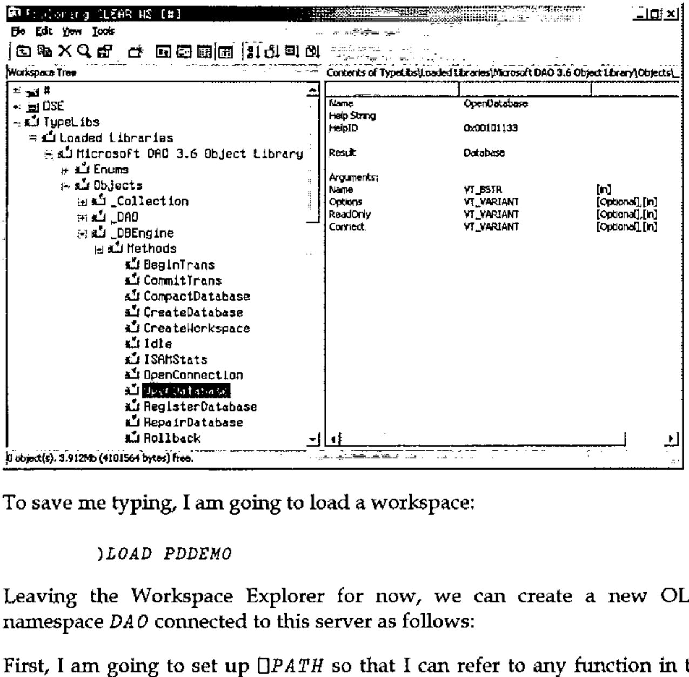

Driving the Windows GUI and COM from Dyalog APL Version 9.0
Vector 17:2, page 74
Transcribed from the printed issue; not yet reviewed. Read it in the PDF of the issue, page 74
This tutorial explores the manner in which Dyalog APL Version 9 has been enhanced to make access to the Windows GUI and COM easier to program and faster to use.
Let’s start by making a Form:
In the session menu, there is an option labelled Options/Object Syntax/Expose GUI Properties which I have checked. This means that I can manipulate a property directly, as if it were a variable:
If we change into the F namespace, we can use the new )PROPS, )EVENTS and )METHODS system commands to discover the names of the Properties, Events and Methods provided by the object.
)CS F
#.F
)PROPS
Accelerator AcceptFiles Active AlphaBlend AutoConf
Border BCol Caption ChildList Coord CursorObj
Data Dockable Docked DockChildren DockShowCaption
EdgeStyle Event EventList FontObj Handle HelpButton
Hint HintObj HScroll IconObj KeepOnClose MaskCol MaxButton
MethodList MinButton Moveable OnTop Picture
Posn PropList Range Size Sizeable State
Step SysMenu TextSize Thumb Tip TipObj Translate
Type UndocksToRoot Visible VScroll XRange YRange
)EVENTS
Close Configure ContextMenu Create DockAccept
DockCancel DockEnd DockMove DockRequest DockStart
DragDrop DropFiles DropObjects
DyalogCustomMessage1 Expose FontCancel FontOK
FrameContextMenu GotFocus Help HScroll KeyPress
LostFocus MouseDblClick MouseDown MouseEnter
MouseLeave MouseMove MouseUp MouseWheel Select
StateChange VScroll
)METHODS
Animate ChooseFont Detach GetFocus GetTextSize
Wait
Once in the F namespace, we can of course omit the name of the namespace itself when we refer to a property. For example:
There is a new AlphaBlend property (Windows 2000 only) that controls the translucency of a Form. For example:
There is a new Animate method (Windows 2000 only) which shows and hides an object with an animated effect. For example:
The optional second parameter specifies the play time:
As we are in the Form namespace F, we can create a Grid object named G as follows:
Again, we can manipulate the properties of the Grid directly.
Indexing works as you would expect:
As does Strand (vector) assignment:
You can also manipulate several properties together using an expression such as:
Incidentally, the Animate method also works on the Grid (and on most other objects) but the animation only applies when making it visible:
The new syntax is especially convenient when combined with :With. Here is a function that illustrates this nicely.
)CS
DUCK
∇ DUCK;F;SINK;ANIM
[1] ANIM←1 2 4 8 16 ⍝ Animation styles
[2] :Trap 6
[3] 'F'⎕WC'Form' 'Duck à la Grid'
[4] :With 'F.G'⎕WC'Grid'
[5] Values←50 50⍴⊂''
[6] Posn Size←(0 0)(50 50)
[7] CellWidths CellHeights←6
[8] TitleWidth TitleHeight←0
[9] 'D'⎕WC'Poly'#.GDUCK('Coord' 'Cell')('FStyle' 0)
[10] :While 1
[11] Visible←0
[12] Posn←?⌊0.5×##.Size
[13] BCol←⊂?255 255 255
[14] D.FillCol←?255 255 255
[15] SINK←Animate(⊃ANIM),1000
[16] ANIM←1⌽ANIM
[17] ⎕DL 0.5
[18] :EndWhile
[19] :EndWith
[20] :EndTrap
∇
Let’s now take a look at the Event property.
'F'⎕WC'Form'
)COPY DISPLAY
DISPLAY F.Event
.⍬-----------.
| .→--------. |
| | .⍬. .⍬. | |
| | | | | | | |
| | '-' '-' | |
| '∊--------' |
'∊------------'
You can assign to the Event property:
F.Event←'KeyPress' 'FOO'
DISPLAY F.Event
.→-----------------------.
| .→-------------------. |
| | .→-------. .→----. | |
| | |KeyPress| |#.FOO| | |
| | '--------' '-----' | |
| '∊-------------------' |
'∊-----------------------'
∇ FOO M
[1] DISPLAY M
∇
Now, if I press a key on the Form, the callback fires and displays the event message:
.→--------------------------.
| .→. .→-------. |
| |F| |KeyPress| g 103 71 0 |
| '-' '--------' - |
'∊--------------------------'
As you can see, the first element of the event message is a character vector containing the name of the object that caused the event. This is compatible with previous versions of Dyalog APL.
If however, we prefix the event name with on, the first element of the event message is a namespace reference to the object
F.Event←'onKeyPress' 'FOO'
.→--------------------------.
| .→-------. |
| #.F |KeyPress| g 103 71 0 |
| '--------' - |
'∊--------------------------'
To make it easier to assign events, you can assign to on<event name> directly:
F.onKeyPress←'FOO'
F.onMouseDown←'FOO'
DISPLAY F.Event
.→-----------------------------------------------.
| .→---------------------. .→-------------------. |
| | .→----------. .→----. | | .→---------. .→----. | |
| | |onMouseDown| |#.FOO| | | |onKeyPress| |#.FOO| | |
| | '-----------' '-----' | | '----------' '-----' | |
| '∊---------------------' '∊-------------------' |
'∊-----------------------------------------------'
Microsoft Jet Engine¶
We will start our exploration of the Version 9 COM interface, using the DAO.DBEngine OLE Server (also called the Microsoft Jet Engine).
Let’s begin by using the new COM Browser that is built into the Version 9 Workspace Explorer.

The Registered Libraries folder contains information about all of the libraries associated with COM objects that are installed on your computer. You can navigate to the Microsoft DAO 3.6 Object Library, as shown above, and then double-click to load it.
The Loaded Libraries folder contains information about all of the libraries that are loaded into the active workspace. You can navigate to the _DBEngine object, and then to its OpenDatabase method, as shown below.

The Opendatabase method takes a single mandatory parameter, the name of a database file, and a number of additional optional parameters.
To save me typing, I am going to load a workspace:
Leaving the Workspace Explorer for now, we can create a new OLEClient namespace DAO connected to this server as follows:
First, I am going to set up ⎕PATH so that I can refer to any function in the root from any namespace:
Then, change to the DAO namespace and look at the properties and methods that the object provides using the )PROPS and )METHODS system commands:
)CS DAO
)PROPS
AutoBrowse ChildList ClassID ClassName Data
DefaultPassword DefaultType DefaultUser Errors Event
EventList Handle HelpFile IniPath InstanceMode
KeepOnClose LastError Locale LoginTimeout MethodList
Properties PropList QueueEvents SystemDB
Type TypeList Version Workspaces
)METHODS
BeginTrans Browse CommitTrans CompactDatabase
CreateDatabase CreateWorkspace Detach GetEventInfo
GetMethodInfo GetPropertyInfo GetTypeInfo Idle ISAMStats
OpenConnection OpenDatabase OLEAddEventSink OLEDeleteEventSink
OLEListEventSinks OLEQueryInterface RegisterDatabase
RepairDatabase Rollback SetMethodInfo SetOption
SetPropertyInfo ShowHelp
Position the cursor over the word OpenDatabase, and invoke the on-line help by pressing F1 or using the context menu.
You will notice that the on-line help confirms what we discovered previously using the Explorer.
To save typing, the NORTHWIND function returns the full pathname of the sample Northwind.mdb database on my computer:
The OpenDatabase function returns an object, i.e. a namespace reference, which we can assign to a name DB:
If we ask what’s in DB, APL tells us that it is a namespace reference to a Database object:
Let’s now change into the DB namespace and see what we find:
)CS DB
#.DAO.[Database]
)METHODS
Browse Close CreateProperty CreateQueryDef CreateRelation
CreateTableDef Detach Execute GetEventInfo GetMethodInfo
GetPropertyInfo GetTypeInfo MakeReplica NewPassword
OpenRecordset OLEAddEventSink OLEDeleteEventSink
OLEListEventSinks OLEQueryInterface PopulatePartial
SetMethodInfo SetPropertyInfo ShowHelp Synchronize
Once again, let’s use the context-sensitive help to examine the OpenRecordset method. You will see that it can be called with an SQL query. The method returns a Recordset object, which we will assign to the name RCS.
Now change into the RCS namespace and look at the properties and methods it provides:
)CS RCS
#.DAO.[Database].[Recordset]
)METHODS
AddNew Browse Cancel CancelUpdate Clone Close
CopyQueryDef Delete Detach Edit FillCache FindFirst
FindLast FindNext FindPrevious GetEventInfo
GetMethodInfo GetPropertyInfo GetRows GetTypeInfo Move
MoveFirst MoveLast MoveNext MovePrevious
NextRecordset OpenRecordset OLEAddEventSink OLEDeleteEventSink
OLEListEventSinks OLEQueryInterface Requery Seek
SetMethodInfo SetPropertyInfo ShowHelp Update
Using the context-sensitive help, take a look at the GetRows method. This takes a single parameter that specifies the number of rows to retrieve. Let’s try asking for 2:
GetRows 2
ALFKI ANATR
Alfreds Futterkiste Ana Trujillo Emparedados y helados
Maria Anders Ana Trujillo
Sales Representative Owner
Obere Str. 57 Avda. de la Constitución 2222
Berlin México D.F.
12209 05021
Germany Mexico
030-0074321 (5) 555-4729
030-0076545 (5) 555-3745
This delivers the first 2 rows from the table. If we do it again, we get the next two (rows 3 and 4).
GetRows 2
ANTON AROUT
Antonio Moreno Taquería Around the Horn
Antonio Moreno Thomas Hardy
Owner Sales Representative
Mataderos 2312 120 Hanover Sq.
México D.F. London
05023 WA1 1DP
Mexico UK
(5) 555-3932 (171) 555-7788
(171) 555-6750
The MoveFirst method resets the pointer to the first row:
MoveFirst
GetRows 2
ALFKI ANATR
Alfreds Futterkiste Ana Trujillo Emparedados y helados
Maria Anders Ana Trujillo
Sales Representative Owner
Obere Str. 57 Avda. de la Constitución 2222
Berlin México D.F.
12209 05021
Germany Mexico
030-0074321 (5) 555-4729
030-0076545 (5) 555-3745
To get all the data, we can just ask for a large number of rows:
I will now show you how this entire query can be executed in a single statement
First, we need to change back to root:
If we execute the following expression, we get a namespace reference to a Database object:
There is nothing to prevent us from calling the OpenRecordset method in this object, even though the object itself has no name: This gives us a namespace reference to a Recordset object.
((DAO.OpenDatabase NORTHWIND).OpenRecordset 'Select * from
Products')
#.DAO.[Database].[Recordset]
Finally, we can run the GetRows method in this object, giving us:
DATA←⍉((DAO.OpenDatabase NORTHWIND).OpenRecordset 'Select * from
Products').GetRows 9999
⍴DATA
77 10
Microsoft Excel¶
Let’s now experiment with the Excel OLE Server, Excel.Application
We can create a new OLEClient namespace EX connected to this server as follows:
Next, we will change into the EX namespace and look at its Properties:
)CS EX
)PROPS
_Default ActiveCell ActiveChart ActiveDialog
ActiveMenuBar ActivePrinter ActiveSheet ActiveWindow
...
Width Windows WindowsForPens WindowState Workbooks
Worksheets WorksheetFunction
Let’s make Excel visible by setting its Visible property:
I seem to remember that the way into Excel is to start with the Workbooks property. To check this out, I can click on the word Workbooks (as displayed in the session window) and bring up the context-sensitive help, using the mouse or F1.
Following the on-line help, I see that it has an Add method that can be called with or without arguments – let’s try it without (the default). Note that to call it "without arguments", we supply ⍬ as the argument.
There is another likely looking property named ActiveSheet; let’s check out its help topic.
So ActiveSheet returns a Worksheet object. Let’s look at its Properties. This time, we will use its PropList property (a property added by Dyalog APL) rather than the system command )PROPS which you can only use inside the namespace in question.
ActiveSheet.PropList
Type Application Creator Parent CodeName _CodeName Index Name Next
OnDoubleClick OnSheetActivate OnSheetDeactivate PageSetup Previous
ProtectContents ProtectDrawingObjects ProtectionMode ProtectScenarios
Visible Shapes TransitionExpEval AutoFilterMode EnableCalculation Cells
CircularReference Columns ConsolidationFunction ConsolidationOptions
ConsolidationSources DisplayAutomaticPageBreaks EnableAutoFilter
EnableSelection EnableOutlining EnablePivotTable FilterMode Names
OnCalculate OnData OnEntry Outline Range Rows ScrollArea...
Let’s try changing its Name property:
The Range property looks interesting – let’s check it out using the context-sensitive help:
So, Range is a property that takes 2 parameters that specify the addresses of the first and last cells. It returns a Range object which, we can see from the help file, has a Value property. We can set this as follows:
Notice that the result of the expression (ActiveSheet.Range 'A1' 'J10') is a Namespace Reference to an (unnamed) Range object. We can then reference its Value property directly.
The Range object has a Font property that returns a Font object. The Font object has a property called Size; let’s try it:
Notice that in this case, there are two sub-expressions that return objects; (ActiveSheet.Range 'A1' 'J10') and (ActiveSheet.Range 'A1' 'J10').Font
Similarly, a Range object has a Borders property that returns a Borders object (actually a collection) that has a LineStyle property. Let’s query it:
The help file tells us that LineStyle may be set to one of a set of XlLinestyle enumerated constants. In Version 9, you can refer to these directly.
XlLineStyle
xlContinuous 1
xlDash ¯4115
xlDashDot 4
xlDashDotDot 5
xlDot ¯4118
xlDouble ¯4119
xlSlantDashDot 13
xlLineStyleNone ¯4142
So, the following expression may be used to set the grid lines to double lines.
If you are going to refer to an object more than once, it is more efficient to assign it to a name (if you were programming in VBA, you would be advised to do this too)
If you want to specify an individual border in VBA, you can reference it by an expression such as
This works because the Borders collection has a default method (Item). In Dyalog APL, you cannot use this syntax; you have to call the Item method explicitly.
So, to set the colour of the horizontal lines to red;
(CELLS.Borders.Item xlInsideHorizontal).Color←256⊥0 0 255
(CELLS.Borders.Item xlInsideVertical).Color←256⊥0 255 0
... and the vertical lines to green,
The reason that it is necessary to encode the RGB colour, is that the data type of the Color property is defined to be VT_VARIANT. If a data type is VT_COLOR, you can assign a 3-element RGB vector to it directly. Notice also that the RGB triplet is specified in the reverse order (blue, green, red).
Microsoft Word¶
Let’s now look at driving Microsoft Word. I am going to use a real-life example; one that we use to maintain the cross-references in the Dyalog APL Object Reference. Here is the function we use:
∇ UPDATE;W;REL;F;T;I;NAME;TYPE;SINK;⎕ML;LIST;OBJ
[1] ⎕ML←3
[2] ⎕PATH←'↑'
[3] GET_EVENT_MAP
[4] 'W'⎕WC'OLECLIENT' 'Word.Application'
[5] REL←W.Documents.Open'C:\MANUAL\OR901.DOC'
[6] W.Visible←1
[7] :With W.ActiveDocument.ActiveWindow.View
[8] ShowAll←0
[9] ShowHiddenText←0
[10] :EndWith
[11] REL.(ShowSpellingErrors ShowGrammaticalErrors)←0
[12] :With REL.Content
[13] F←Find
[14] F.Style←wdStyleHeading5
[15] :While F.Found∧F.Execute''
[16] T←Text
[17] NAME TYPE←2↑(~T∊⎕AV[4 5 10])⊂T
[18] :If TYPE≡'Object'
[19] SINK←Move wdParagraph 2
[20] :For ITEM :In OBJECT_INFO NAME
[21] SINK←Move wdWord 3
[22] SINK←MoveEnd wdParagraph 1
[23] Select
[24] Text←ITEM
[25] SINK←Move wdParagraph 1
[26] :EndFor
[27] SINK←MoveEnd wdSection 1
[28] :Else
[29] LIST←('Property' 'Event' 'Method'⍳⊂TYPE)⊃#.Properties
#.Events #.Methods
[30] OBJ←MAKE_LIST((⊂⊂NAME)∘.∊LIST)/#.Objects
[31] SINK←Move wdParagraph 1
[32] SINK←Move wdWord 3 ⍝ Applies to <tab> <word 4 = stuff>
[33] SINK←MoveEnd wdParagraph 1
[34] Select
[35] Text←OBJ
[36] SINK←MoveEnd wdSection 1
[37] :EndIf
[38] :EndWhile
[39] :EndWith
[40] REL.Close REL.wdSaveChanges
[41] W.Quit ⍬
∇
Let’s trace it and see how it works.
- [1]
- Use maximum APL2 compatibility
- [2]
- Search up the namespace tree for functions.
- [3]
- Reads the lists of Objects, Properties, etc which are stored in a component file.
- [4]
- Creates an OLEClient object named W connected to the OLE Server Word.Application.
- [5]
- Executes the Open method of the Documents object to open the Dyalog APL Object Reference file OR901.DOC for editing.
- [6]
- Sets the Visible property (of the Word application). (This is done only for the sake of this presentation.)
- [7]
-
When editing a Word document it is often important to ensure that the various user/document options are correctly set. For example, this function will only work if hidden text is hidden. Let’s use the on-line help:
Now I am going to search for *hiddentext
The ShowHiddenText property of the View object is what we need. By clicking See Also we can see another related property ShowAll. If we look at Options/Tools/View, we can see the check boxes to which these properties refer. The example illustrates how we can get to the View object via ActiveDocument.ActiveWindow. The :With control structure is a handy way (but not the only way) to set both properties:
- [8]
- If I right-click on the name ShowAll, then take a look at Properties/Value, I can see that ShowAll is set to 1. This line sets it to 0.
- [9]
-
If I switch to the session and type
This line sets ShowHiddenText to 0
- [11]
-
Although this step is not strictly necessary (because, in production, the Word application is not visible), this line disables spelling and grammar checking (otherwise, I will get an unfriendly message box telling me that there are too many to cope with!). This could be done using
:Withas before, but an alternative is to parenthesise the strand assignment within the namespace reference. Before we execute this line, let’s take a look at the current values of these properties: - [12]
-
Before executing this line, I will right-click on the text
REL.Contentand bring up the on-line help. As you can see, the Content property returns a Range object that represents the entire content of the document. The:Withtakes us into this (unnamed) namespace.After executing the line, we can see the extent of the Range object from its Start end End properties. These indicate the starting and ending character index of the Range.
- [13]
- We are going to use Find to locate paragraphs with style Heading 5. Once again, I will bring up the on-line help for the Find property; it returns a Find object which is assigned the name F.
- [14]
- This line sets the Style property of the Find object to Heading 5. This is one of the standard styles, so we can use the enumerated constant wdHeading5 to refer to it.
- [15]
- This line invokes the Execute method (which returns 1 for success) and then checks the Found property (belt and braces). The function loops until its runs out of Heading 5 paragraphs.
- [16]
-
If the Execute method of the Find object finds a hit, it resets the extent of its parent object (in this case, the unnamed Range object that we are in) to the Find target. Here’s where we are in the document:
Abort — Method 103
Applies to Printer
This method causes the current print job to be aborted and all pending output to be discarded.
The Abort method is niladic.
If you attach a callback function to this event and have it return a value of 0, the print job will continue.
The Text property reports the text.
Let’s look at the Start and End properties again.
- [17]
- At last, some APL code!. This line splits out the name and type of the item found. TYPE will be Object, Property, Method or Event. The first item located is Abort Method, so we go to [29].
[29] :
- [30]
- These lines extract the list of objects to which the particular Property, Method or Event in question (NAME) applies.
- [31]
-
Using the on-line help, we can see that the Move method collapses the Range and moves the Start and End pointers the specified number of units. In this case, we move the Range (the Range we are in) forward one paragraph.
After executing [31], let’s look at the Start and End properties again:
- [32]
-
The Range is now positioned before the paragraph that starts Applies to<tab>. This line moves the Range forward 3 words, i.e. to just after the <tab>.
After executing [32], let’s look at the Start and End properties again:
- [33]
-
Using the on-line help again, we see that the MoveEnd method moves the ending character position of a range. This line moves the End character to the end of the paragraph, leaving the Start character unchanged.
- [34]
- This statement selects and highlights the current Range. This line is not part of the production code, but I have included it to force the display to show where we are in the document.
- [35]
-
This statement replaces the existing text (within the current Range) with the contents of OBJ. Notice that OBJ contains a new line character.
- [36]
- Having made the text replacement, we are ready to move on to the next item. However, don’t forget what how we have restricted the Range we are in. This line moves the End pointer to the end of the section (i.e. to the end of the chapter we are working on).
[37] :
- [38]
- The code branches back to the start of the While loop to look for the next item with Paragraph style Heading 5. We have seen how Properties are dealt with, and Methods/Events are the same. Let’s stop it after it finds an Object by putting a stop on [19], then let execution go on.
- [19]
- Rather than bore you with the code, which is essentially the same as before, I will just step through it and you can see what happens.
Finally, here is a little curiosity that I stumbled across.
The Word Application object has a method called GetSpellingSuggestions that returns a SpellingSuggestions collection. Each item in the SpellingSuggestions collection is a SpellingSuggestion object whose Name property contains the suggested word (phew!).
Using Dyalog APL, we can get suggestions for the spelling mistake "Hellao" as follows: